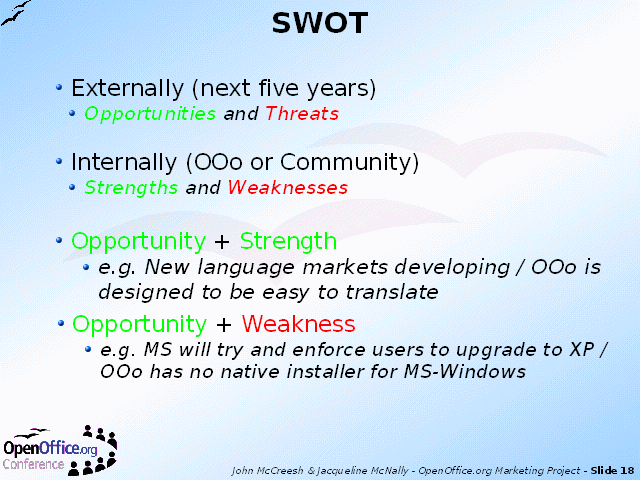

Notes:
Combining the Threats and Opportunities seen in the outside world with the Strengths and Weaknesses of OpenOffice.org gives a two by two matrix of the kind beloved by consultants and business schools.
(Strengths Weaknesses Opportunities and Threats also makes a nice acronym in the English language - SWOT.)
O-S: There is Opportunity which plays to one of our Strengths = a 'no brainer' - just do it
O-W: There is an Opportunity but a Weakness means we might not be able to respond to it = effort in this area could bring big rewards